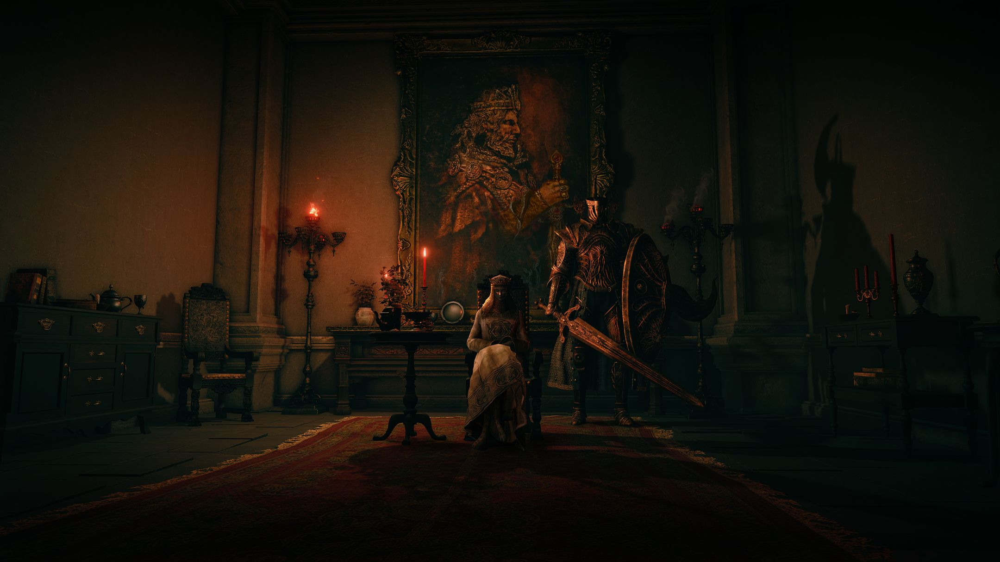
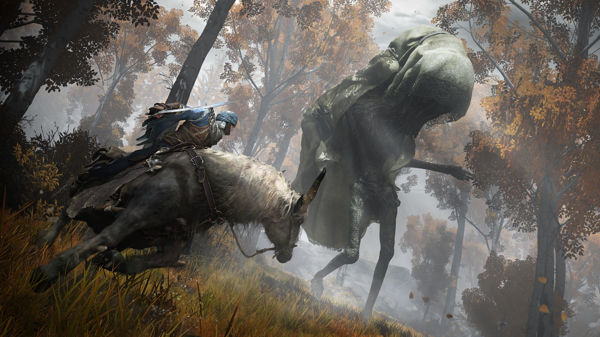
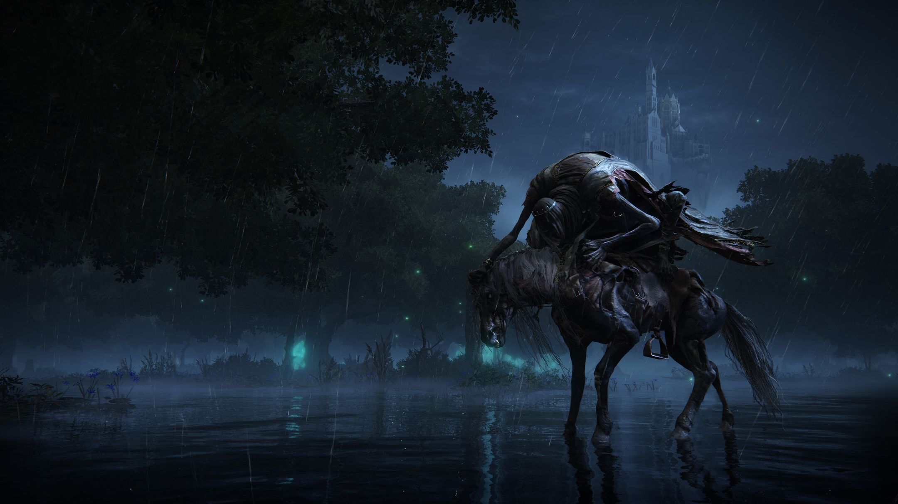
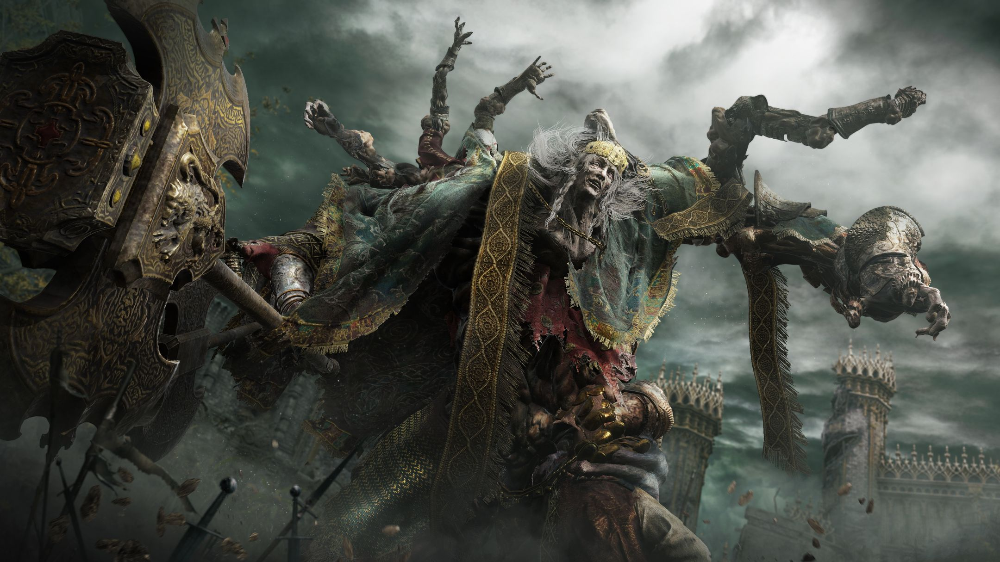
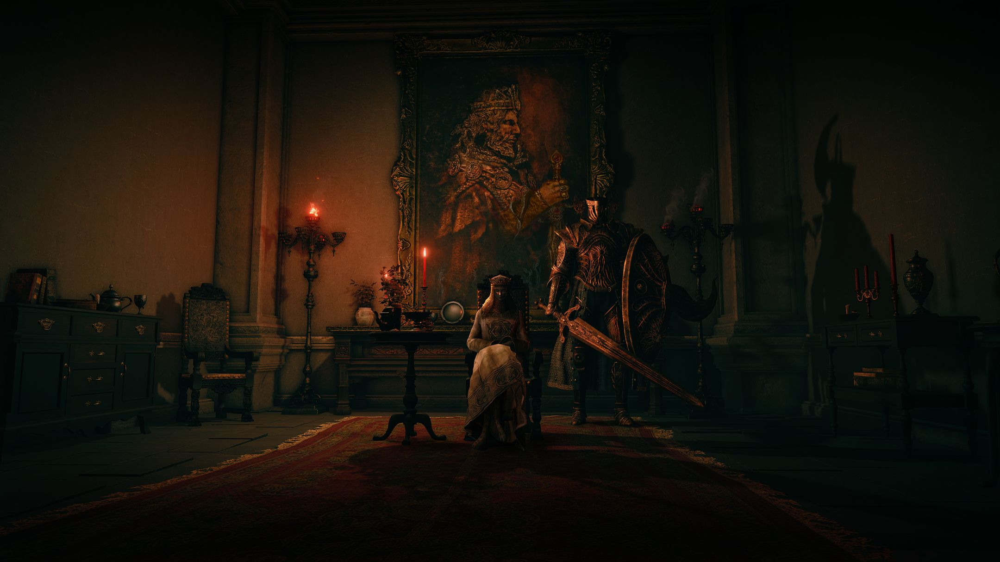
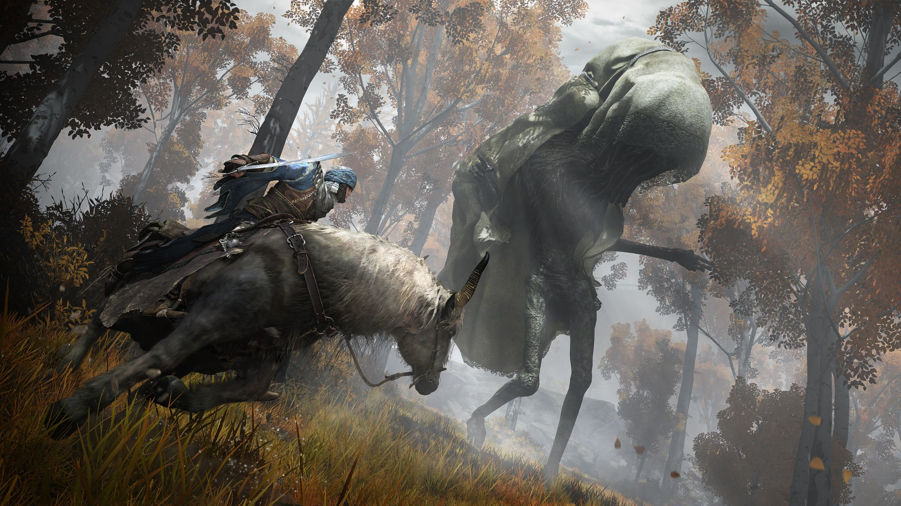
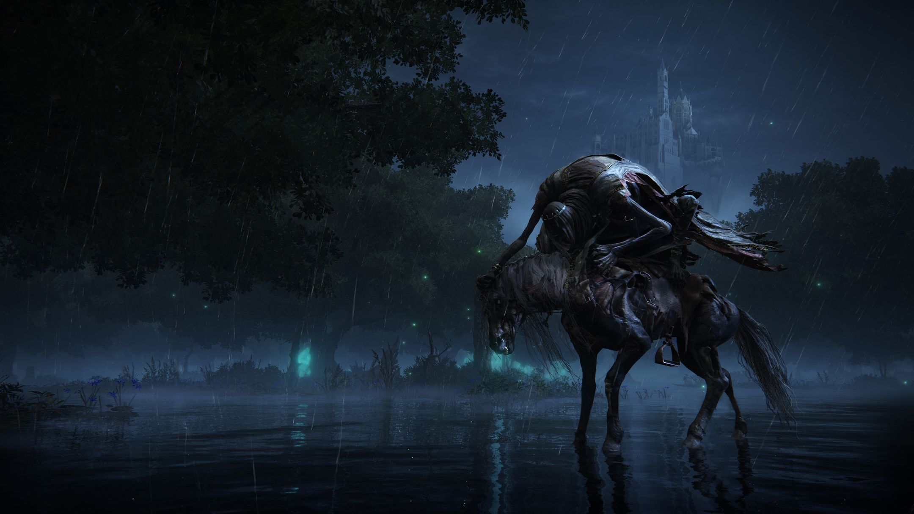
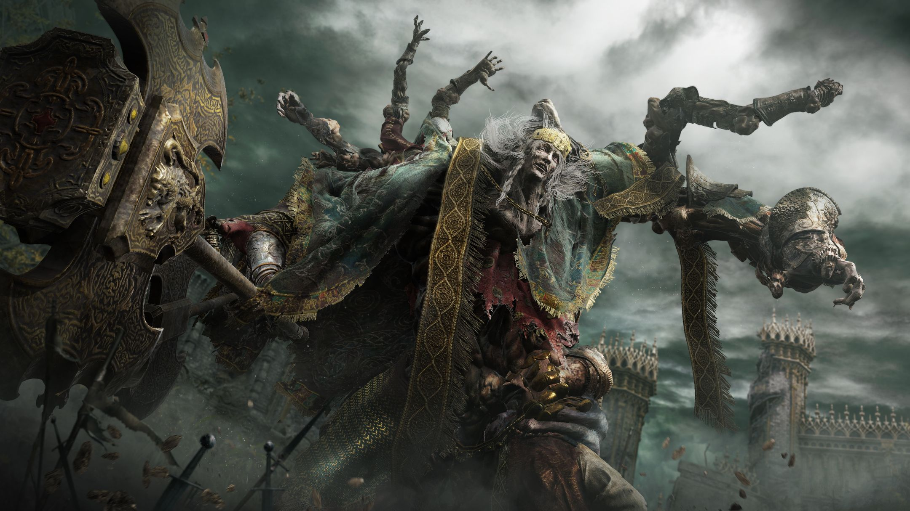

Elden Ring ocorre no reino das Terras Intermédias, algum tempo após a destruição do Anel Prístino e a dispersão de seus fragmentos, as Grandes Runas. Uma vez agraciado pelo anel e o Erdtree que simboliza sua presença, o reino agora é governado pela descendência semideusa da Rainha Marika, a Eterna, cada um possuindo um fragmento do anel que os corrompe e os mancha com poder. Como um "Maculado" — um exilado das Terras Intermédias e que perdeu a graça do anel e convocado de volta após a Fragmentação — o jogador deve atravessar o reino para encontrar todas as Grandes Runas, restaurar o Anel Prístino e se tornar o Lorde Prístino.